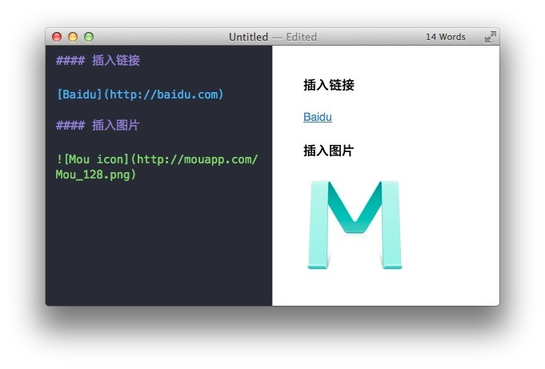

列表
列表的显示只需要在文字前加上 - 或 * 即可变为无序列表，有序列表则直接在文字前加 1. 2. 3. 符号要和文字之间加上一个字符的空格。 要注意的是 前后都要有空行：

引用
在文本前加入 > 这种尖括号（大于号）即可

图片与链接
插入链接与插入图片的语法很像，区别在一个 !号
插入图片的地址需要图床，生成URL地址即可。
注意：图片必须与需插入的文件在同一文件夹内；
查阅markdown标记语言
Markdown使用规则
标题
标题是每篇文章都需要也是最常用的格式，在 Markdown 中，如果一段文字被定义为标题，只要在这段文字前加 # 号即可。
以此类推，总共六级标题，建议在井号后加一个空格，这是最标准的 Markdown 语法。
列表
列表的显示只需要在文字前加上 - 或 * 即可变为无序列表，有序列表则直接在文字前加 1. 2. 3. 符号要和文字之间加上一个字符的空格。 要注意的是 前后都要有空行：
引用
在文本前加入 > 这种尖括号（大于号）即可
图片与链接
插入链接与插入图片的语法很像，区别在一个 !号
插入图片的地址需要图床，生成URL地址即可。
注意：图片必须与需插入的文件在同一文件夹内；

Markdown 的粗体和斜体用两个 * 包含一段文本就是粗体的语法，用一个 * 包含一段文本就是斜体的语法。
例如：这里是粗体 这里是斜体
左对齐：
< p align=”left”>左对齐< /p>
左对齐
右对齐：
< p align=”right”>右对齐< /p>
右对齐
| 姓名 | 爱好 | |
|---|---|---|
| 张三 | 足球 篮球 |
李四|羽毛球<br>乒乓球
显示为：
姓名
爱好
张三
足球
篮球
李四
羽毛球
乒乓球
| 标题 | 标题 | 标题 |
|---|---|---|
| 单元格 | 单元格 | 单元格 |
| 单元格 | 单元格 | 单元格 |
| 标题 | 标题 | 标题 |
|---|---|---|
| 单元格 | 单元格 | 单元格 |
| 单元格 | 单元格 | 单元格 |
你可以控制单元格的对齐方式：
| 标题 | 标题 | 标题 |
|---|---|---|
| 左 | 中 | 右 |
| 左 | 中 | 右 |
例子如下：
| Tables | Are | Cool |
| ------------- |:-------------:| -----:|
| col 3 is | right-aligned | $1600 |
| col 2 is | centered | $12 |
| zebra stripes | are neat | $1 |
这种语法生成的表格如下：
| Tables | Are | Cool |
|---|---|---|
| col 3 is | right-aligned | $1600 |
| col 2 is | centered | $12 |
| zebra stripes | are neat | $1 |
代码框
如果需要在文章里引用代码框，在 Markdown 下实现，只需要用两个 ` 把中间的代码包裹起来。图例：
使用 tab 键即可缩进。
分割线
分割线的语法只需要另起一行，连续输入三个星号 *** 即可。
文本样式
（带“*”星号的文本样式，在原版Markdown标准中不存在，但在其大部分衍生标准中被添加）
alert('Hello World');图片
使用Markdown将图像插入文章，你需要在Markdown编辑器输入 。 这时在预览面板中会自动创建一个图像上传框。你可以从电脑桌面拖放图片(.png, .gif, .jpg)到上传框, 或者点击图片上传框使用标准的图像上传方式。 如果你想通过链接插入网络上已经存在的图片，只要单击图片上传框的左下角的“链接”图标，这时就会呈现图像URL的输入框。想给图片添加一个标题, 你需要做的是将标题文本插图中的方括号，e.g;
.
注：
先输入标题行，回车后在第二行输入|-后，按tab键就将进入Table编辑模式。
表格必须与前面输入的文字之间有空行，否则表格会被当成普通文字渲染。
具体使用Sublime Text编写Markdown：
markdown使用教程1（参考）